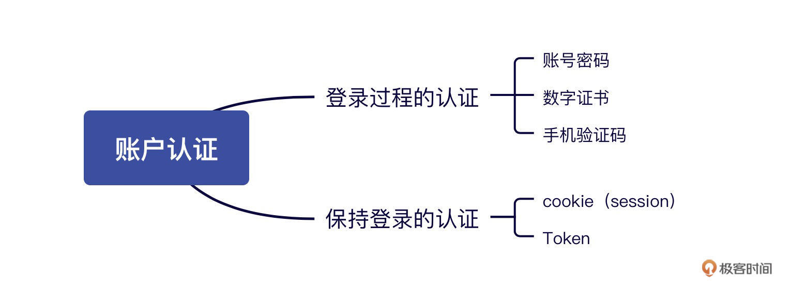
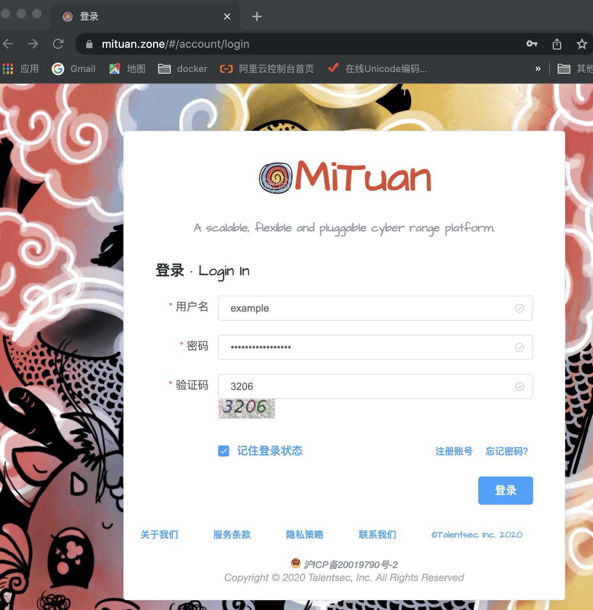
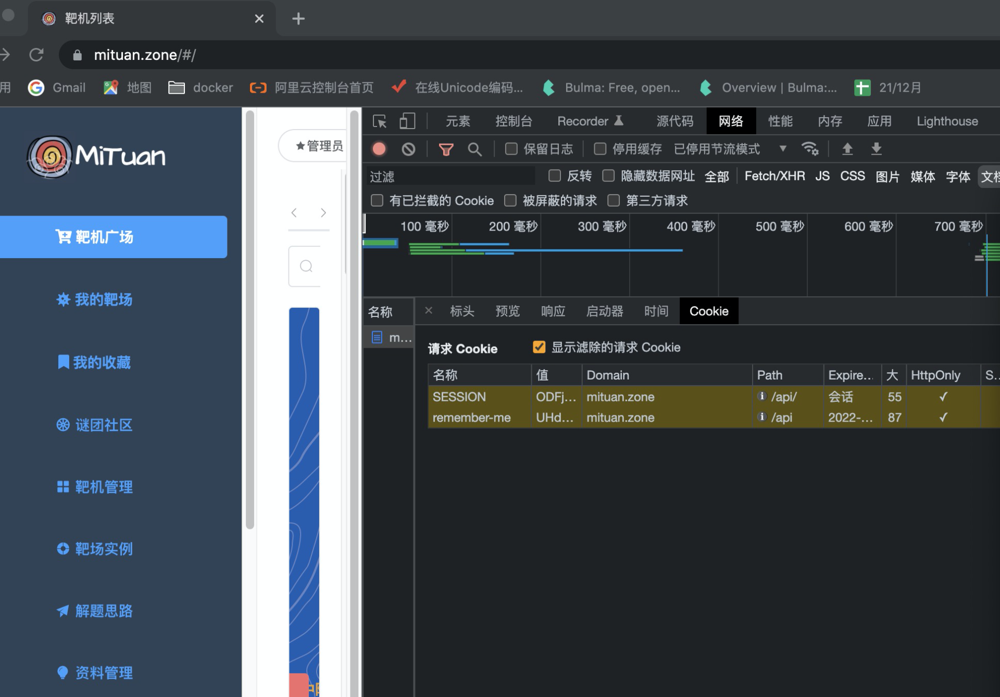
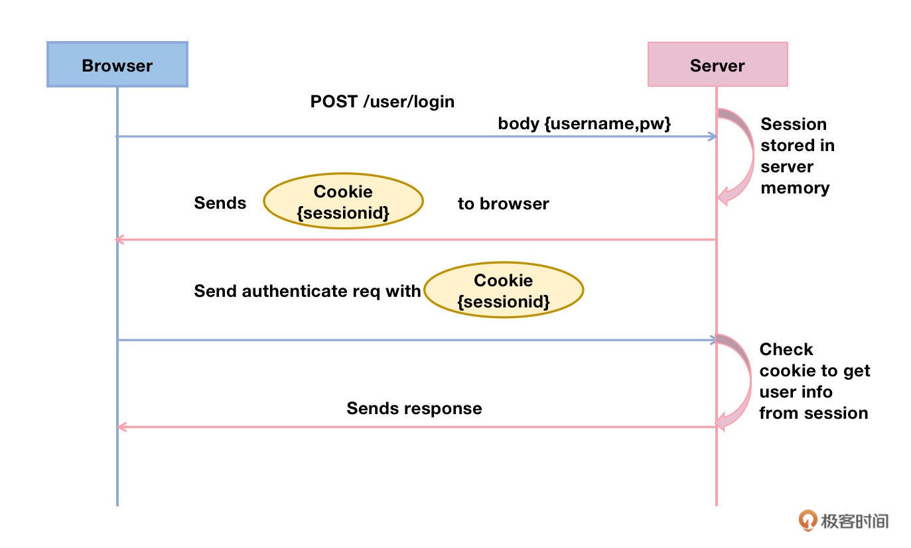
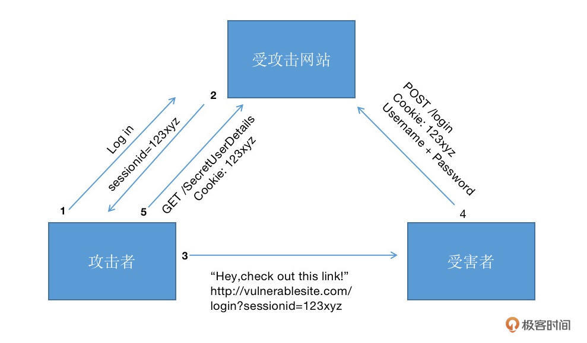
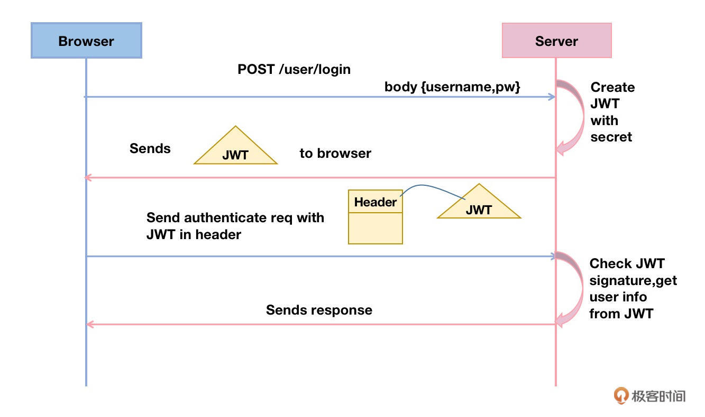
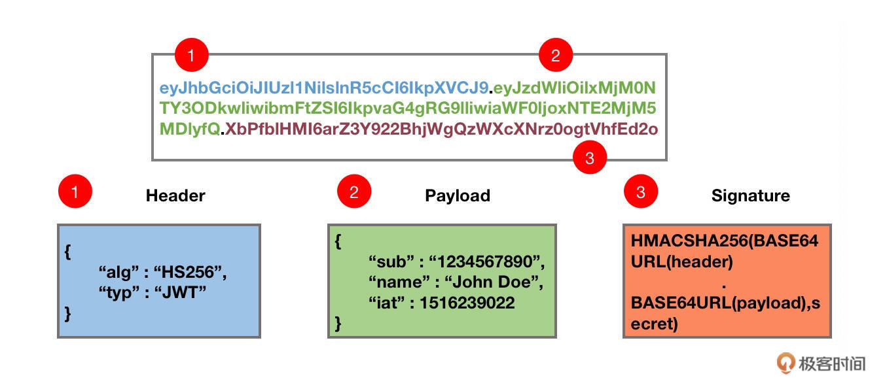
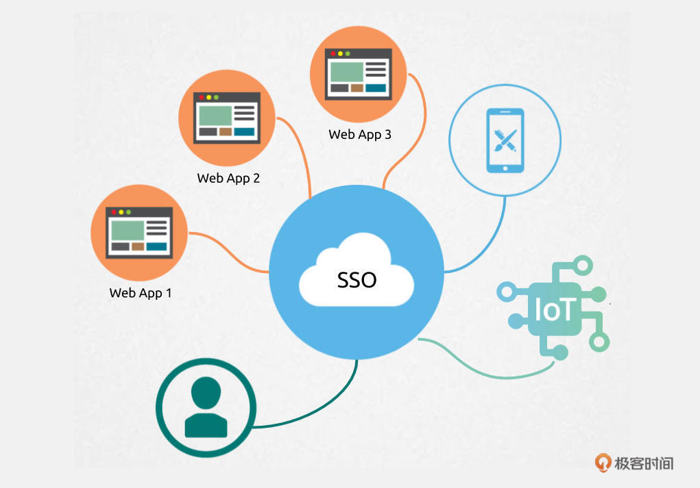

- 00 导读 解读OWASP Top10 2021.md.html
- 00 开篇词 从黑客的视角找漏洞，从安全的角度优雅coding.md.html
- 01 失效的访问控制：攻击者如何获取其他用户信息？.md.html
- 02 路径穿越：你的Web应用系统成了攻击者的资源管理器？.md.html
- 03 敏感数据泄露：攻击者如何获取用户账户？.md.html
- 04 权限不合理：攻击者进来就是root权限？.md.html
- 05 CSRF：为什么用户的操作他自己不承认？.md.html
- 06 加密失败：使用了加密算法也会被破解吗？.md.html
- 07 弱编码：程序之间的沟通语言安全吗？.md.html
- 08 数字证书：攻击者可以伪造证书吗？.md.html
- 09 密码算法问题：数学知识如何提高代码可靠性？.md.html
- 10 弱随机数生成器：攻击者如何预测随机数？.md.html
- 11 忘记加“盐”：加密结果强度不够吗？.md.html
- 12 注入（上）：SQL注入起手式.md.html
- 13 注入（下）：SQL注入技战法及相关安全实践.md.html
- 14 自动化注入神器（一）：sqlmap的设计思路解析.md.html
- 15 自动化注入神器（二）：sqlmap的设计架构解析.md.html
- 16 自动化注入神器（三）：sqlmap的核心实现拆解.md.html
- 17 自动化注入神器（四）：sqlmap的核心功能解析.md.html
- 19 失效的输入检测（上）：攻击者有哪些绕过方案？.md.html
- 20 失效的输入检测（下）：攻击者有哪些绕过方案？.md.html
- 21 XSS（上）：前端攻防的主战场.md.html
- 22 XSS（中）：跨站脚本攻击的危害性.md.html
- 23 XSS（下）：检测与防御方案解析.md.html
- 24 资源注入：攻击方式为什么会升级？.md.html
- 25 业务逻辑漏洞：好的开始是成功的一半.md.html
- 26 包含敏感信息的报错：将安全开发标准应用到项目中.md.html
- 27 用户账户安全：账户安全体系设计方案与实践.md.html
- 28 安全配置错误：安全问题不只是代码安全.md.html
- 29 Session与Cookie：账户体系的安全设计原理.md.html
- 30 HTTP Header安全标志：协议级别的安全支持.md.html
- 31 易受攻击和过时的组件：DevSecOps与依赖项安全检查.md.html
- 32 软件和数据完整性故障：SolarWinds事件的幕后⿊⼿.md.html
- 33 SSRF：穿越边界防护的利刃.md.html
- 34 Crawler VS Fuzzing：DAST与机器学习.md.html
- 35 自动化攻防：低代码驱动的渗透工具积累.md.html
- 36 智能攻防：构建个性化攻防平台.md.html
- 大咖助场 数字证书，困境与未来.md.html
- 春节策划（一） 视频课内容精选：Web渗透测试工具教学.md.html
- 春节策划（三） 一套测试题，看看对课程内容的掌握情况.md.html
- 春节策划（二） 给你推荐4本Web安全图书.md.html
- 结束语 无畏前行.md.html
- 捐赠
29 Session与Cookie：账户体系的安全设计原理
你好，我是王昊天。
我有次在访问某个页面时，为了下载一些东西，按照页面要求进行了复杂的登录操作。之后我不小心关闭了当前页面，然后再一次点开这个页面，麻木的准备再来一遍复杂的登录操作时，我神奇地发现，面前的Web应用竟然是登录成功的状态，你知道这是怎么一回事吗？
事实上，这个现象是由Web账户体系的安全设计所导致的。在这一讲中，我们将会对它进行学习，这样你就能清楚地知道问题的答案啦。下面我们就正式开始今天的学习。
现在几乎每个大型Web应用都会存在账户体系，当我们需要获取Web应用中的某些服务时，Web应用会首先对我们的身份进行认证。所以接下来，我们会从身份认证的相关基础知识入手。
身份认证
身份认证的方式有多种，我们可以用最典型的账号密码进行认证，除此之外，我们还可以用cookie（session）、Token、数字证书以及手机验证码来验证。这里你可能对于cookie以及Token会比较陌生，不过不用担心，我们会在后面对它们进行详细的讲解。

在这些认证过程中，可以分为两种类型，即登录过程的认证以及保持登录的认证。
为了让你更好地理解它们二者之间的区别，我们一起来看一个示例。

这是谜团（mituan.zone）的登录页面，我们需要输入正确的用户名、密码以及验证码才能通过身份认证，很明显这是登录过程的认证。
当我们登录成功后，我们会发现浏览器中多了一些cookie信息。

这些cookie信息有一定的有效期。在有效期内，cookie信息会一直存在，它使得我们下次访问这个页面时，无需再次输入账号密码进行登录，而是可以直接用cookie信息来实现身份认证操作，这就是保持登录的认证。
你现在知道导入中神奇现象发生的原因了吗？其实在导入部分中的自动登录，就是通过保持登录的认证来实现的。而这种认证方式，主要是通过会话管理来实现的，接下来让我们简单了解下会话管理的作用。
会话管理
在学习会话管理之前，我们首先需要巩固下HTTP协议的知识。
HTTP协议是无状态无连接的协议，服务端对于客户端每次发送的请求都认为它是一个新的请求，上一次会话和下一次会话是没有联系的。因为它无法保存登录状态，所以从协议本身来说，它不适合用来做会话管理。
因此，我们会使用一个上层应用去实现我们的会话管理功能。这个应用可以在切换页面时保持登录状态，并且对用户是透明的，这样就使得我们能在短时间内再次访问一个登录过的页面，就会保持登录状态。
经过上述内容的学习，你已经知道了会话管理具有什么作用。接下来，让我们具体学习下会话管理的两种典型方式，即基于session的认证以及基于Token的认证。
基于 session 的认证
Web应用可以基于session的认证来实现保持登录，它的具体实现方式如下图所示：

用户在首次访问Web应用时，会将自己的账号密码通过POST方式进行上传，然后Web应用服务器会对账号密码进行检查。如果检查通过就会给用户配置一个sessionid，并将它存储在服务器内存中，之后再把这个sessionid发送给用户。
注意这里sessionid的位置可能在URL、隐藏域以及cookie中。由于cookie信息较为隐蔽些，所以将sessionid放在cookie中相对来说更为安全，因此这一实现方式也最普遍。
用户在收到Web应用服务器的回应之后，再次对Web应用发起请求的cookie中就会自动包含sessionid信息。Web应用服务器会对其中的sessionid信息进行检查，以获取用户的登录信息，如果信息正确，就让用户处于登录成功的状态，否则需要重新进行登录过程的认证。
值得一提的是，为了安全考虑，Web应用通常会给sessionid设置一个过期时间，使得sessionid仅在某个时间段内有效，这样就可以有效地抵御攻击者盗用sessionid绕过身份认证的行为。
到这里，我们已经学习了Web应用是如何利用session进行身份认证的。而这里还有一个很重要的知识点我们有必要深入了解一下，那就是在session进行身份认证中存在的典型攻击方式——会话固定攻击。
在之前的学习中，我们知道了sessionid可以存在于URL中。在这种情况下，如果登录前后sessionid不变化，那么攻击者就可以发起会话固定攻击。
这里我已经画出了会话固定攻击的示意图，让我们一起看看吧。

攻击者首先访问一个需要登录的网站，获取到Web应用返回的sessionid信息。由于攻击者没有账户密码，所以只能通过发送一个诱骗信息给受害者，使得受害者用这个sessionid实现登录操作。这样攻击者的sessionid就通过了验证，使得攻击者再次用这个sessionid信息访问被攻击网站时，可以直接通过保持登录的认证。
这就是将sessionid信息放在URL中的安全隐患。
基于 Token 的认证
除了基于session的认证之外，Web应用还可以利用Token来实现会话管理。
基于Token的认证方式，如下图所示，让我们从图中观察它是如何实现的吧。

用户首先需要通过POST方式上传账号密码信息，进行登录过程的认证，Web应用服务器接收到之后，会检查账号密码信息是否正确，如果正确就会生成一个包含密码信息的Token值，这里以JWT（JSON Web Token）为例。
之后服务器会将这个Token信息发送我们的浏览器，接着浏览器会将这个Token信息保存在Header中，使得以后每次请求的Header中都会包含这个Token信息。服务器在接收到Token信息后，会从中提取出用户的账户信息，并对此进行检测，然后将响应发送给我们的浏览器。
这就是基于Token的认证方式，下面让我们以JWT为例进行学习，深入地了解Token的具体形式。

上方方框中的内容是一个完整的JWT信息，它可以根据.分割成三个部分，我们将它不同的部分用不同的颜色进行显示。接下来，让我们逐一分析JWT各个部分的内容。
第一个部分经过base64解码就变为了蓝色方框中的内容，其中alg的内容设置的是signature中签名使用的算法，而typ的内容则定义了这个Token的类型。
第二部分解码为绿色方框中的内容，它包含了用户相关的信息，Web应用可以根据这些信息来确定用户的身份。
最后一部分解码为橙色方框中的内容，它包含了对Token信息的完整性验证签名。其中需要用到仅有服务器知道的secret信息，这也是导致攻击者无法伪造Token信息的关键。
以上就是JWT的组成结构。其中Header以及payload用到的都是些通用数据，攻击者很容易就可以伪造出来。唯一有难度的就是对secret签名部分的伪造，事实上，攻击者可以通过密钥爆破的方式，尝试进行Signature信息的伪造。一旦伪造成功，攻击者就可以以任意身份登录这个Web应用，这对Web应用来说是极大的威胁。所以Token信息的设计者，需要有意识地提高secret的复杂度。
到这里，你已经学习了会话管理的两种典型方式。接下来，让我们拓宽视野，简单了解下单点登录的知识。
单点登录
如今的Web应用越来越多，同一个公司可能就会研发出多个Web应用，如果每个应用都需要分开登录注册，那既会使得用户感到不方便，也会增加开发成本。为了解决这个问题，大家通常会采取单点登录方案。
单点登录就是用户只需要登录一次就可以访问所有相互信任的应用系统。它把认证的流程统一起来，使得认证的风险集中化。

这样，我们只需要在那统一的登录流程中做好安全认证措施，就可以实现对多个应用的身份认证。单点登录既能降低开发成本，也可以提高登录的安全性。
总结
这节课我们学习了账户体系的安全认证设计。
首先，我们学习了身份认证的方式，了解到除了我们熟悉的登录过程认证之外，还有保持登录认证这一种方式。
接着，我们深入学习了保持登录认证的方式，知道了它是由会话管理方法实现的。然后我们对基于session的会话管理以及基于Token的会话管理进行了全面的学习，我们不仅知道了它们保持登录认证的实现方式，还知道它们存在的安全隐患。
最后，我们了解了一个面对多个应用需要登录验证时的解决方案，即单点登录。使用单点登录既可以统一管理所有的登录认证，还可以降低多个Web应用的开发成本。
思考题
你知道在基于session的保持登录认证中，为什么将session信息放置在cookie中会更加安全吗？
欢迎在评论区留下你的思考。如果觉得今天的内容对你有所帮助的话，也欢迎你把课程分享给其他同事或朋友，我们共同学习进步！
© 2019 - 2023 Liangliang Lee. Powered by gin and hexo-theme-book.